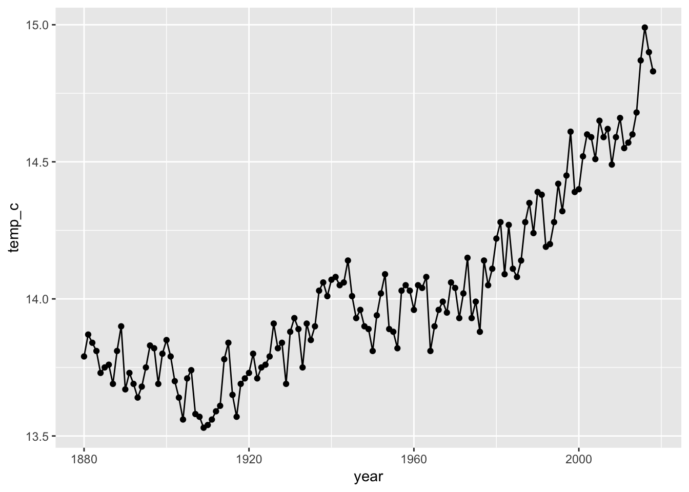
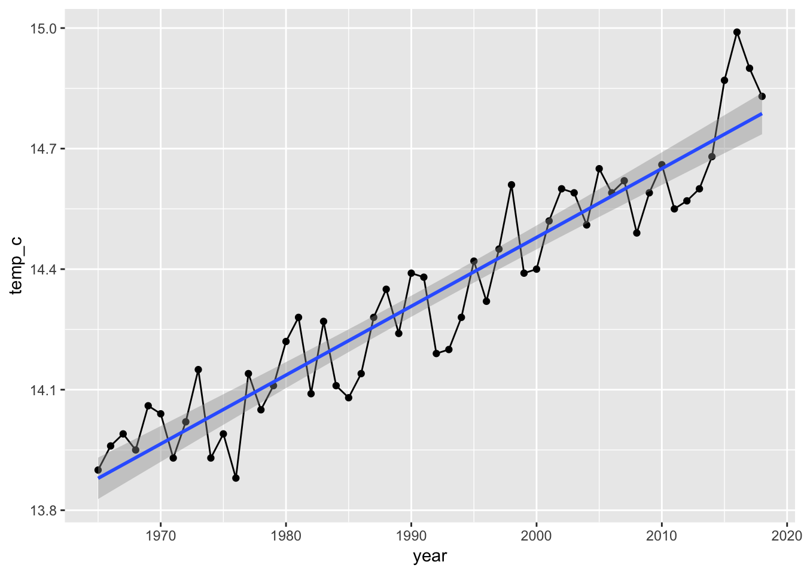
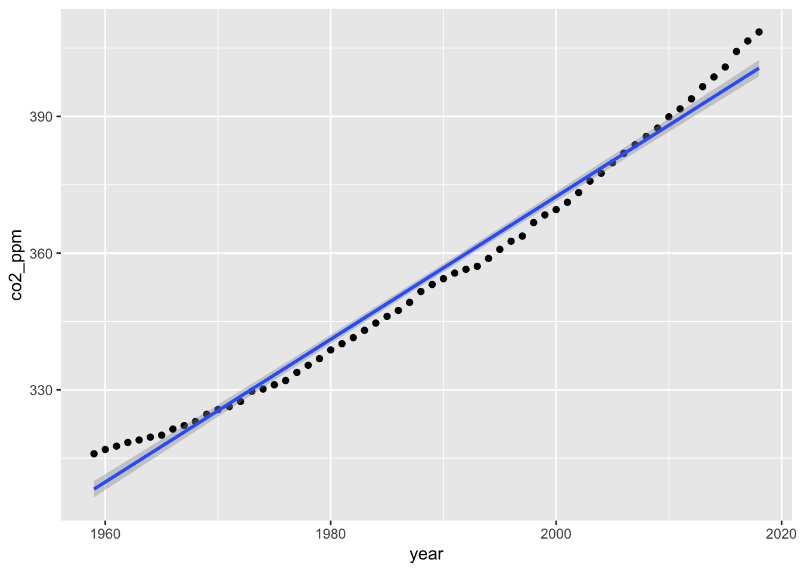
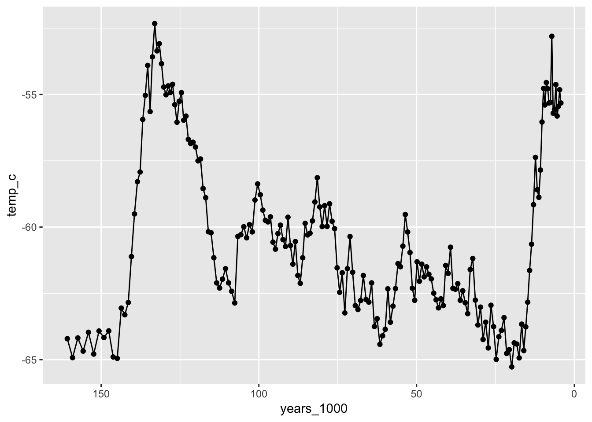
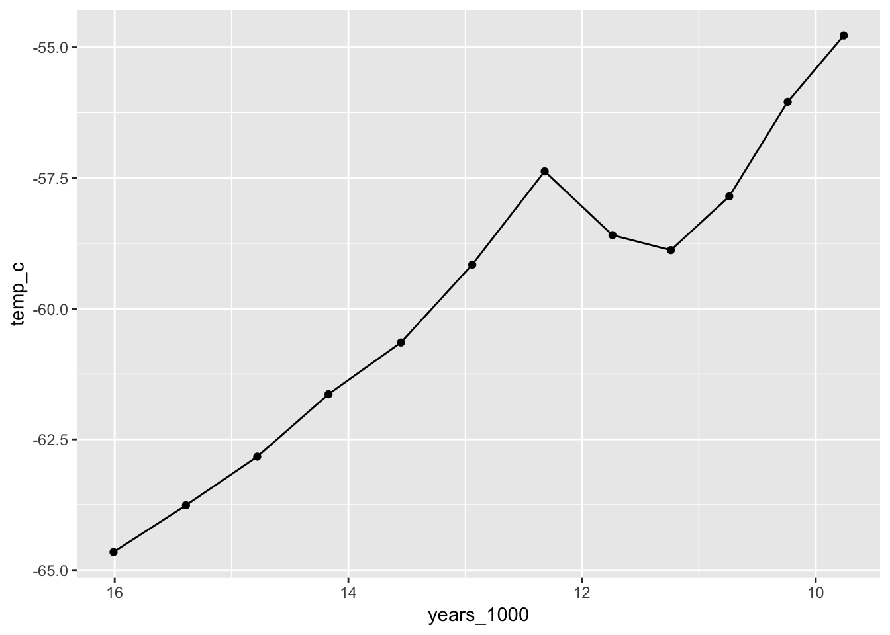
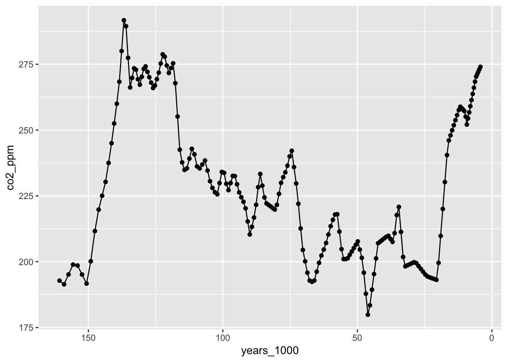
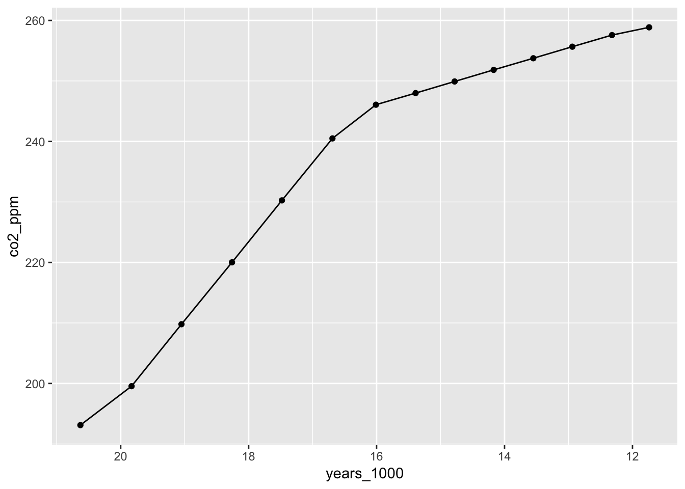
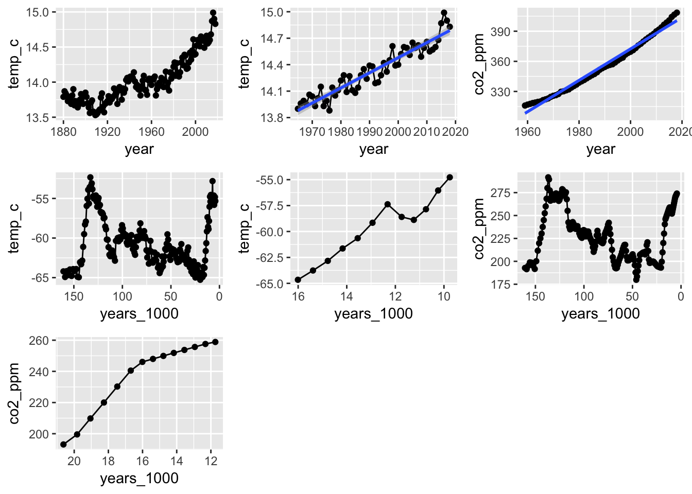

# load libraries ----
library(tidyverse)## Registered S3 methods overwritten by 'ggplot2':
## method from
## [.quosures rlang
## c.quosures rlang
## print.quosures rlang## ── Attaching packages ───────────────────────────────────────────────────────── tidyverse 1.2.1 ──## ✔ ggplot2 3.1.1 ✔ purrr 0.3.2
## ✔ tibble 2.1.3 ✔ dplyr 0.8.1
## ✔ tidyr 0.8.3 ✔ stringr 1.4.0
## ✔ readr 1.3.1 ✔ forcats 0.4.0## ── Conflicts ──────────────────────────────────────────────────────────── tidyverse_conflicts() ──
## ✖ dplyr::filter() masks stats::filter()
## ✖ dplyr::lag() masks stats::lag()library(readxl)
library(lubridate)##
## Attaching package: 'lubridate'## The following object is masked from 'package:base':
##
## datelibrary(scales)##
## Attaching package: 'scales'## The following object is masked from 'package:purrr':
##
## discard## The following object is masked from 'package:readr':
##
## col_factorlibrary(janitor)##
## Attaching package: 'janitor'## The following objects are masked from 'package:stats':
##
## chisq.test, fisher.testlibrary(plotly)##
## Attaching package: 'plotly'## The following object is masked from 'package:ggplot2':
##
## last_plot## The following object is masked from 'package:stats':
##
## filter## The following object is masked from 'package:graphics':
##
## layoutlibrary(patchwork)# read in file and make year numeric ----
modern_temp.df <- read_excel("./data/book_tgt_climate_9.xlsx",
skip = 3,
sheet="Temp (C)") modern_temp.df <- modern_temp.df %>%
clean_names() %>%
rename(temp_c = temperature) write_csv(modern_temp.df, "finalized_data/modern_temp.csv")# plot the new temp data -----
modern_temp.plot <- modern_temp.df %>%
ggplot(aes(year, temp_c)) +
geom_point() +
geom_line()
modern_temp.plot
ggplotly(modern_temp.plot)# filter out new data that isolates the max -----
max_modern_temp.df <- modern_temp.df %>%
filter(year > 1964)# current temp max linear plot -----
max_modern_temp.plot <- max_modern_temp.df %>%
ggplot(aes(year, temp_c)) +
geom_point() +
geom_line() +
geom_smooth(method = "lm")
max_modern_temp.plot
ggplotly(max_modern_temp.plot)# linear model current temp ----
modern_temp_inc.model <- lm(temp_c ~ year, data = max_modern_temp.df)
summary(modern_temp_inc.model)##
## Call:
## lm(formula = temp_c ~ year, data = max_modern_temp.df)
##
## Residuals:
## Min 1Q Median 3Q Max
## -0.18781 -0.08018 0.01993 0.07602 0.23697
##
## Coefficients:
## Estimate Std. Error t value Pr(>|t|)
## (Intercept) -1.978e+01 1.663e+00 -11.90 <2e-16 ***
## year 1.713e-02 8.348e-04 20.52 <2e-16 ***
## ---
## Signif. codes: 0 '***' 0.001 '**' 0.01 '*' 0.05 '.' 0.1 ' ' 1
##
## Residual standard error: 0.09561 on 52 degrees of freedom
## Multiple R-squared: 0.8901, Adjusted R-squared: 0.888
## F-statistic: 421.1 on 1 and 52 DF, p-value: < 2.2e-16# read in current co2---
modern_co2.df <- read_delim("data/co2_annmean_mlo.txt", delim = " ",
skip_empty_rows = TRUE,
comment = "#",
col_names = FALSE) %>%
rename(year= X1, co2_ppm = X2, uncertainty = X3 ) %>%
mutate(year = as.numeric(year), co2_ppm = as.numeric(co2_ppm))## Parsed with column specification:
## cols(
## X1 = col_character(),
## X2 = col_character(),
## X3 = col_character()
## )# plot current co2-----
modern_co2.plot <- modern_co2.df %>% ggplot(aes(x=year, y = co2_ppm)) +
geom_point() +
geom_smooth(method="lm")
modern_co2.plot
ggplotly(modern_co2.plot)# current co2 linear model ----
modern_co2.model = lm(co2_ppm~year, data=modern_co2.df)
summary(modern_co2.model)##
## Call:
## lm(formula = co2_ppm ~ year, data = modern_co2.df)
##
## Residuals:
## Min 1Q Median 3Q Max
## -4.344 -2.703 -1.224 2.070 7.934
##
## Coefficients:
## Estimate Std. Error t value Pr(>|t|)
## (Intercept) -2.759e+03 5.199e+01 -53.07 <2e-16 ***
## year 1.566e+00 2.614e-02 59.89 <2e-16 ***
## ---
## Signif. codes: 0 '***' 0.001 '**' 0.01 '*' 0.05 '.' 0.1 ' ' 1
##
## Residual standard error: 3.507 on 58 degrees of freedom
## Multiple R-squared: 0.9841, Adjusted R-squared: 0.9838
## F-statistic: 3587 on 1 and 58 DF, p-value: < 2.2e-16# save cleaned modern co2 data
write_csv(modern_co2.df, "finalized_data/modern_co2.csv")# ice core data ----
ancient_temp_co2.df <- read_excel("data/Vostok Ice Core Data 2018.xls") # clean data
ancient_temp_co2.df <-ancient_temp_co2.df %>%
rename(years_1000 = age)# plot ice core temp ----
anc_temp.plot <- ancient_temp_co2.df %>%
ggplot(aes(years_1000, temp_c)) +
geom_point() +
geom_line() +
scale_x_reverse()
ggplotly(anc_temp.plot)anc_temp.plot
# isolate max rate temp ----
anc_max_temp.df <- ancient_temp_co2.df %>%
filter(years_1000 > 9.7 & years_1000 < 16.02)anc_temp_max.plot <- anc_max_temp.df %>%
ggplot(aes(years_1000, temp_c)) +
geom_point() +
geom_line() +
scale_x_reverse()
ggplotly(anc_temp_max.plot)anc_temp_max.plot
# model max temp linear ----
anc_max_temp.model <- lm(temp_c ~ years_1000, data=anc_max_temp.df)
summary(anc_max_temp.model)##
## Call:
## lm(formula = temp_c ~ years_1000, data = anc_max_temp.df)
##
## Residuals:
## Min 1Q Median 3Q Max
## -1.34682 -0.30001 -0.08291 0.30803 1.70972
##
## Coefficients:
## Estimate Std. Error t value Pr(>|t|)
## (Intercept) -41.420 1.599 -25.90 1.69e-10 ***
## years_1000 -1.433 0.124 -11.56 4.16e-07 ***
## ---
## Signif. codes: 0 '***' 0.001 '**' 0.01 '*' 0.05 '.' 0.1 ' ' 1
##
## Residual standard error: 0.8519 on 10 degrees of freedom
## Multiple R-squared: 0.9304, Adjusted R-squared: 0.9234
## F-statistic: 133.6 on 1 and 10 DF, p-value: 4.156e-07# co2 plot ----
anc_co2.plot <- ancient_temp_co2.df %>%
ggplot(aes(years_1000, co2_ppm)) +
geom_point() +
geom_line() +
scale_x_reverse()
ggplotly(anc_co2.plot)anc_co2.plot
# extract max co2 data ----
anc_co2_max.df <- ancient_temp_co2.df %>%
filter(years_1000 > 11.7 & years_1000 < 20.65)# co2 anc max plot ----
anc_co2_max.plot <- anc_co2_max.df %>%
ggplot(aes(years_1000, co2_ppm)) +
geom_point() +
geom_line() +
scale_x_reverse()
ggplotly(anc_co2_max.plot)anc_co2_max.plot
# old co2 model
anc_co2_max.model <- lm(co2_ppm ~ years_1000, data=anc_co2_max.df)
summary(anc_co2_max.model)##
## Call:
## lm(formula = co2_ppm ~ years_1000, data = anc_co2_max.df)
##
## Residuals:
## Min 1Q Median 3Q Max
## -9.3324 -5.5647 0.0165 5.0727 9.9912
##
## Coefficients:
## Estimate Std. Error t value Pr(>|t|)
## (Intercept) 356.4861 10.8970 32.71 4.21e-13 ***
## years_1000 -7.5208 0.6747 -11.15 1.09e-07 ***
## ---
## Signif. codes: 0 '***' 0.001 '**' 0.01 '*' 0.05 '.' 0.1 ' ' 1
##
## Residual standard error: 6.925 on 12 degrees of freedom
## Multiple R-squared: 0.9119, Adjusted R-squared: 0.9046
## F-statistic: 124.3 on 1 and 12 DF, p-value: 1.094e-07# save cleaned ancient data
write_csv(ancient_temp_co2.df, "finalized_data/ancient_temp_co2.csv")# test.df <- read_csv("https://raw.githubusercontent.com/wlperry/Project_Eddie/master/finalized_data/avg_temp.csv")all.plots <- modern_temp.plot +
max_modern_temp.plot +
modern_co2.plot +
anc_temp.plot +
anc_temp_max.plot +
anc_co2.plot +
anc_co2_max.plot
all.plots